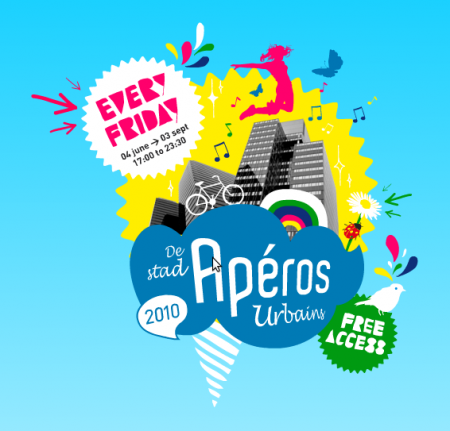

Con este solazo en Bruselas, la cita de los aperitivos urbanos va a estar reventona. Hoy a partir de las cinco de la tarde en el parque del cincuentenario (Cinquantenaire) mucha gente, música y buen rollo:
Etiqueta: aperos urbains 2010 Bruselas
Vuelven los Apéros Urbains: de terrazas por Bruselas
Esta tarde y con un solazo que no veas hace su entrada triunfante la nueva temporada de los Apéros Urbains en Bruselas. La cita es en la Place Poelaert a partir de las 17h para aprovechar bien el sol. A partir de las 22h habrá fiestaca de lanzamiento con los DJ / diyéis:
- L-fêtes (de mis DJ favoritas de Bruselas por el buen rollo que dan con su música)
- The Klaxx
- SHAMEBOY – live
Eso sí, a las 23:30 chapan para que no se quejen mucho los vecinos y trasladan la fiesta a la discoteca K-Nal, Apéros Club, 1 avenue du Port – 1000 Bruxelles.
Los Aperitivos Urbanos tienen lugar cada viernes en diferentes puntos de Bruselas, hasta la primera semana de septiembre. Aquí tenéis el resumen del programa para lo que queda de primavera-verano en Bruselas:
11 juin 2010 : Avenue Louise, sur le parking central entre rue du Bailli et rue Defacq
dj’s: Dj Sonar, Lorenzo Ottati
18 juin 2010 : Bois de la Cambre (chemin du Croquet)
dj’s: Nancy Burello, So’lex
25 juin 2010 : dans le parc du Cinquantenaire / entrée coté rond-point Schuman
dj’s: Mickey, Milo, Cosy Mozzy
2 juillet 2010 : Place Guy d’Arezzo – avenue Molière
dj’s: TangE, L-Fêtes
4 juillet 2010: environs de l’Atomium / dans le cadre de l’arrivée du Tour de France de
vélo à Bruxelles-ville étape / de 14h00 à 19h00
dj’s: Lorenzo Ottati, Funky Bompa
9 juillet 2010 : Boulevard Saint-Michel – rond point Montgomery
dj’s: TangE, dj Sand
16 juillet 2010 : Jardins du Roi – avenue Louise
dj’s: Nancy Burello, TangE
23 juillet 2010 : Atomium / Atomic Party avec une vingtaine de dj’s pour une grande boîte de nuit à ciel ouvert de 17h00 à 05h30
STAGE 1:
17h00: Dj Sand
18h30: Playmoboy
20h00: Dj Sonar
21h30: Nancy Burello
22h30: Kid Strike
23h30: Dave Luxe
00h30: Wax Dolls – live
01h30: Mashed Paper Klub
03h00: Sound of Stereo
04h30: Jean Montevideo
end -> 5h30
STAGE 2:
17h00: Lady Jane
18h00: So’lex
19h00: Mustang
20h30: Kong & Cortez
21h30: Mickey
22h30: Turntable Dubber
00h00: Milo
01h00: The Klaxx
02h00: Darko
03h30: Marcus Vector
end -> 05h00
30 juillet 2010 : Bruxelles les bains à la Croisetteke
dj’s: TangE, So’lex
6 août 2010 : Parc Royal
dj’s: Lorenzo Ottati
13 août 2010 : Place des Musées / dans le cadre du Brussels Summer Festival
STAGE 1:
17h30: L-Fêtes
19h00: So’lex
20h00: Cosy Mozzy
21h00: The Klaxx
22h00: R.O.B.O.T.S. « A tribute to Daft Punk »
« R.O.B.O.T.S.: Les Daft Punk en vrai ou en faux? A vous de le savoir. Live avec la fameuse structure pyramidale »
23h00: Surfing Leons
20 août 2010 : Place du Sablon
dj’s; Geoffroy
27 août 2010: Bois de la Cambre (chemin du croquet)
dj’s: TangE, Lorenzo Ottati
3 septembre 2010 : Place Poelaert / dans la cour d’honneur du Palais de Justice
dj’s; Funky Bompa, L-Fêtes
Aparte de los Apéros Urbains habituales, hay dos mega-fiestas al aire libre de Bruselas: el 23 de julio y el 13 de agosto qué hay que dejar marcadas en el calendario.
¡Hasta dentro de un rato!